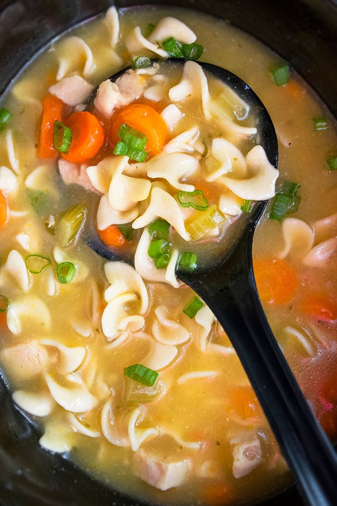

Chicken Noodle Soup

Description
Homemade Chicken Noodle Soup recipe made with simple
ingredients in an Instant pot.
Prep Time: 5-10 minutes Cook Time: 20 Minutes
Ingredients
- 2 tbsp butter
- 1 medium onion, diced
- 2-3 cloves garlic, minced
- 1.5lb chicken breasts
- 8 cups chicken stock
- 2 cubed chicken stock base
- 1/2 cup of water
- 1 bag baby carrots, chopped
- 2/3 bag celery, chopped
- 2/3 bag egg noodles
- 2 tbsp fresh parsley, minced
- 1 tbsp fresh rosemary, minced
- 1 tbsp fresh thyme, minced
- Salt
- Pepper
- Bay leaves
Instructions
- Turn on Instant pot to saute function. Once hot
add butter, onions, carrots and celery. Cook until slightly
softned. Add butter and cook while stirring for 30 seconds.
Season with pepper for taste.
- Add chicken breast, chicken broth, water, rosemary, thyme, bay leaves,
salt, pepper and cubed chicken stock base.
- Place lid on Instant pot and cook on high pressure for 15 minutes.
- Open lid and remove chicken. Put Instant pot on saute and add egg noddles.
- Shred chicken with forks, then place back in Instant pot. Once noodles are
tender, the dish is done.
Back to Homepage